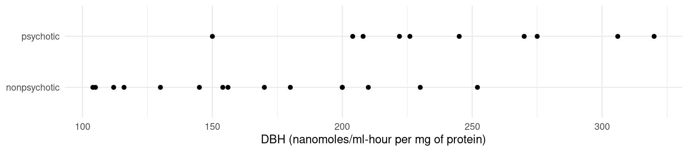
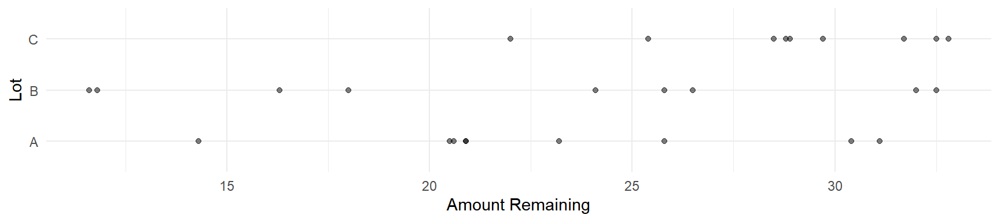
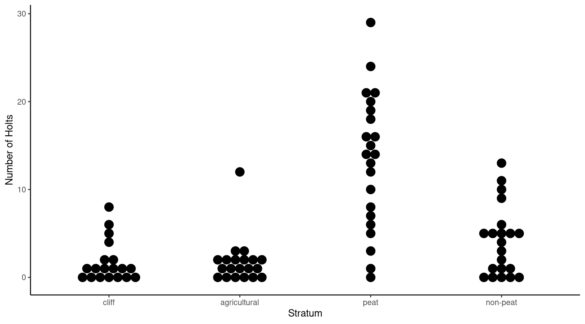

Linear Model Specification and Interpretation
Statistics 516, Homework 1
You can also download a PDF copy of this homework assignment.
This homework assignment concerns specifying and making inferences from linear models using data from several studies. In particular, you will see how to make inferences concerning linear combinations of model parameters. Note that you will likely need to install several packages to access the data used in these problems.
Instructions
This assignment is due by 11:59 PM on Wednesday, February 8th. Email me your homework at trjohns@uidaho.edu. Please submit your homework as a PDF file. Late assignments will be penalized by 10% if turned-in within 12 hours of the deadline, and 10% more for each additional 12 hour interval.
Your solutions must be typed and very neatly organized. I will not try to infer your solutions if they are not clearly presented. Mathematical expressions need not be typeset perfectly but they should be clear. You may substitute letters for symbols (e.g., b1 for \(\beta_1\)) and use other shortcuts for mathematical notation if no meaning is lost.
You must include with your solutions the relevant R output and R code that created them. Be sure that you provide sufficient code that I can replicate your results. Include both the code and the output within the text of your solutions (not in an appendix) using cut-and-paste. Edit your output so as to provide only that which is relevant to answering the questions. Use a monospace font (e.g., Courier or Monoco) for R code and output for clarity. Do not use a monospace font for text that is not R code or output. You can use the R command
options(digits = 4)(or some other small number of digits) to exert some control over the width of the output by reducing the number of digits shown by R.Plots from R Studio can be exported in various formats or directly to the clipboard using the “export” menu in the top-left part of the plot panel.
It is permitted for you to discuss the homework with other students in the course. However your work including R code, output, and written answers must be your own.
You are very welcome to ask me questions. I will be happy to clarify what I am asking in any of the questions and will provide you some help with solving problems by showing you how to work through similar problems from class. I will also be open to helping with any R problems. If you email me with a R question, it will usually be helpful for you to include enough of your R script so that I can replicate your issue. But please avoid saving all your questions for just before the assignment is due. I can usually respond quickly to questions, but I will sometimes need time to respond.
Dopamine \(\beta\)-Hydroxylase Activity in Schizophrenics After Neuroleptic Treatment
The data frame Dopamine in the package
BSDA is from an observational study of the response of
schizophrenic patients to treatment.1 Schizophrenic patients who had been treated
with a neuroleptic drug were classified as either remaining psychotic or
becoming non-psychotic after the treatment. Samples of cerebrospinal
fluid from all patients in the study were assayed for dopamine \(\beta\)-hydroxylase (DBH) activity. DBH is
an enzyme that catalyzes the conversion of the dopamine to
norepinephrine, both of which are thought to be involved in the
pathology of schizophrenia. There researchers thought that a difference
in DBH activity between the two groups might delineate a subgroup of
patients with a dopamine-sensative condition. You can see the raw data
as follows with the variables dbh (DBH activity) and
group (psychotic or non-psychotic).
library(BSDA)
head(Dopamine) dbh group
1 104 nonpsychotic
2 105 nonpsychotic
3 112 nonpsychotic
4 116 nonpsychotic
5 130 nonpsychotic
6 145 nonpsychotictail(Dopamine) dbh group
20 226 psychotic
21 245 psychotic
22 270 psychotic
23 275 psychotic
24 306 psychotic
25 320 psychoticThe plot below shows the data.2
library(ggplot2)
p <- ggplot(Dopamine, aes(x = group, y = dbh)) +
theme_minimal() + geom_point() + coord_flip() +
labs(x = NULL, y = "DBH (nanomoles/ml-hour per mg of protein)")
plot(p) We can also get some basic summary statistics (mean, standard deviation, and sample size) using the dplyr package.3
library(dplyr)
Dopamine %>% group_by(group) %>%
summarize(meandbh = mean(dbh), sddbh = sd(dbh), n = n())# A tibble: 2 × 4
group meandbh sddbh n
<chr> <dbl> <dbl> <int>
1 nonpsychotic 164. 47.0 15
2 psychotic 243. 51.4 10As can be seen from the descriptive statistics, DBH is a bit lower, on average, for the 15 non-psychotic patients. Here you will use a linear model to make inferences about DBH and how it differs between patients classified as psychotic and non-psychotic.
Estimate a linear model using the
lmfunction with DBH (dbh) as the response variable and patient group (group) as the explanatory variable. Report the parameter estimates and their standard errors using thesummaryfunction.The model you estimated in the previous problem can be written as \[ E(Y_i) = \beta_0 + \beta_1 x_i, \] where \(Y_i\) is the \(i\)-th observation of DBH. Explain how the value of \(x_i\) is defined for this model (i.e., how would you determine the value of \(x_i\) for a given patient?). Write the model case-wise to express the expected DBH as a function of \(\beta_0\) and/or \(\beta_1\) for psychotic and non-psychotic patients. Let \(\mu_p\) and \(\mu_n\) be the expected DBH of psychotic and non-psychotic patients, respectively. Using the case-wise representation of the model, write each of these parameters as a function of \(\beta_0\) and/or \(\beta_1\) (i.e., how would you compute \(\mu_p\) and \(\mu_n\) using \(\beta_0\) and \(\beta_1\)?).
Using the
linconandcontrastfunctions from the trtools package, produce estimates, standard errors, and confidence intervals for \(\mu_p\) and \(\mu_n\). For thelinconfunction, use the fact that each of these parameters can be written as a function of \(\beta_0\) and/or \(\beta_1\). The results fromlinconandcontrastshould be the same.Using the
linconandcontrastfunctions, produce an estimate, standard error, and confidence interval for \(\mu_p - \mu_n\), as well as the test statistic and p-value for a test of the null hypothesis that \(\mu_p - \mu_n\) = 0. The results fromlinconandcontrastshould be the same.4There are alternative prameterizations of this model. Estimate a linear model using the
lmfunction with the model formuladbh ~ -1 + group, and repeat what you did in the previous four problems but for this model.5 Note: This problem is extra credit for students enrolled in Stat 436, but is required for students enrolled in Stat 516.
Weight Gain in Rats Exposed to Thiouracil and Thyroxin
The data frame rat in the package ALA
is from an experiment investigating the effects of thiouracil and
thyroxin on growth of rats.6 The ALA package is located
in the R-Forge repository and not the CRAN repository, which is the
default repository used by install.packages, so use the
command
install.packages("ALA", repos = "http://R-Forge.R-project.org")
to specify the correct repository for installing ALA
package. In this experiment thirty rats were each randomly assigned to
one of three treatment groups where for two of the three groups an
additive (thiouracil or thyroxin) was put in the drinking water.7
Measurements of rat weight (in grams) were observed at a baseline of
zero weeks before putting the additives in the drinking water, and again
at one, two, three, and four weeks after the additives were introduced.
Three of the rats from the thyroxin group were lost so the total number
of rats from which we have data is 27.8 The following shows
first few rows of the rat data frame.
library(ALA)
head(rat) id treatment week weight
1 1 control 0 57
28 1 control 1 86
55 1 control 2 114
82 1 control 3 139
109 1 control 4 172
2 2 control 0 60Note that the row names are not consecutive integers. This is likely
because the data were originally sorted by treatment and week before
being sorted by rat and then stored in the data frame. The row names
usually do not have any effect on what we are doing here, but if you
wanted to “reset” them you could use
rownames(rat) <- NULL. The data can be plotted as
follows.
library(ggplot2)
p <- ggplot(rat, aes(x = week, y = weight)) + theme_minimal() +
geom_point() + facet_wrap(~ treatment) + labs(y = "Weight (g)", x = "Week")
plot(p) These data are longitudinal in that multiple observations are made on the same rat over time. Special methods are necessary to provide proper inferences for such designs, and we will discuss these later in the semester. But for now we will ignore this issue. You might pretend that each rat was only observed once (i.e., the rats in a given treatment group observed at one week are different from those observed at another week).
Estimate a linear model using the
lmfunction withweightas your response variable, andweekandtreatmentas your explanatory variables, respectively. The model should be specified with an “interaction” betweentreatmentandweekso that the rate of change in expected weight per week can be different across the treatment groups. Report the parmater estimates using thesummaryfunction. You should get something like the following.Estimate Std. Error t value Pr(>|t|) (Intercept) 52.8800 2.648 19.9694 2.758e-41 treatmentthiouracil 4.8200 3.745 1.2871 2.004e-01 treatmentthyroxin -0.7943 4.127 -0.1925 8.477e-01 week 26.4800 1.081 24.4944 2.373e-50 treatmentthiouracil:week -9.4300 1.529 -6.1680 8.257e-09 treatmentthyroxin:week 0.6629 1.685 0.3935 6.946e-01As can be seen from the output of
summaryfrom the previous problem, the model has six terms, including \(\beta_0\), so it can be written as \[ E(Y_i) = \beta_0 + \beta_1 x_{i1} + \beta_2 x_{i2} + \beta_3 x_{i3} + \beta_4 x_{i4} + \beta_5 x_{i5}, \] where \(Y_i\) is the \(i\)-th observation of weight (in grams), and \(x_{i1}, x_{i2}, \dots, x_{i5}\) depend on treatment and/or week. Explain how \(x_{i1}\), \(x_{i2}\), \(x_{i3}\), \(x_{i4}\), and \(x_{i5}\) are defined for this model (i.e., how would you determine their values for a given observation?). Then write the model case-wise to show how the expected weight depends on week for each of the three treatment conditions.Plot the model by creating an artificial data set of combinations of values of week and treatment using the
expand.gridfunction, computing the predicted values from the model using thepredictfunction, and adding lines to the plot using the code above andgeom_line.Using the
contrastfunction, estimate the expected weight at zero weeks and again at four weeks for rats in each of the three treatment conditions.Using the
contrastfunction, estimate the difference in expected weight at four weeks between the control group and the other two treatment groups, and also between the thiouracil and thyroxin groups. Also estimate these differences at zero weeks.Using the
contrastfunction, estimate the rate of change in expected weight per unit increase in week (i.e., the change in expected weight corresponding to a one week increase in time) for rats in each of the three treatment groups.Now consider a model for these data but using the model formula
weight ~ treatment:weekwith thelmfunction.9 Repeat what you did in the previous problems but using now this model. Note: This problem is extra credit for students enrolled in Stat 436, but is required for students enrolled in Stat 516.
Otter Survey
The data frame otters in the package
SDaA is from a survey of dens (holts) of Eurasian
otters (Lutra lutra) along the coast of Shetland in the United
Kingdom.10 The observational units here are 110 m
deep by 5 km long sections along the coast. These sections were selected
using a stratified random sampling design where simple random sampling
was applied to the sections in each of four strata defined by the
habitat: cliff, agricultural, peat, and non-peat. The number of holts
was counted for the sections that were sampled. Here are the first few
observations of that data.
library(SDaA)
head(otters) section habitat holts
1 1 4 6
2 3 2 0
3 4 1 8
4 8 1 0
5 11 1 0
6 19 2 0The four strata (habitat) are just coded with integers.
This is problematic for two reasons. One is that if we were to use this
variable as an explanatory variable it would be specified as being
quantitative and not categorical, which would not make sense. We can fix
this by converting it to a factor, but it we are going to do that we
might as well give the levels more descriptive labels. The code below
creates a new variable stratum which does this.
library(dplyr)
otters <- otters %>%
mutate(stratum = factor(habitat, levels = 1:4,
labels = c("cliff","agricultural","peat","non-peat")))
head(otters) section habitat holts stratum
1 1 4 6 non-peat
2 3 2 0 agricultural
3 4 1 8 cliff
4 8 1 0 cliff
5 11 1 0 cliff
6 19 2 0 agriculturalIn what follows we will use the variable stratum instead
of habitat. Here is a dot plot of the data.11
library(ggplot2)
p <- ggplot(otters, aes(x = stratum, y = holts)) + theme_classic() +
geom_dotplot(binaxis = "y", binwidth = 1, stackdir = "center") +
labs(x = "Stratum", y = "Number of Holts")
plot(p) Here are some basic descriptive statistics for the number of holts per section by stratum (mean, standard deviation, and sample size).
library(dplyr)
otters %>% group_by(stratum) %>%
summarize(meanholts = mean(holts), sdholts = sd(holts), n = n())# A tibble: 4 × 4
stratum meanholts sdholts n
<fct> <dbl> <dbl> <int>
1 cliff 1.74 2.33 19
2 agricultural 1.75 2.61 20
3 peat 13.3 7.67 22
4 non-peat 4.10 3.95 21Notice how the strata with more holts per section, on average, have higher variance. This is common for counts, and it is a problem for proper inferences since our inferences will assume that the variability of the response variable is (relatively) constant. We will discuss how to deal with this problem later, but ignore it here for the purpose of this assignment. Here you will use a linear model to make inferences about the abundance of otter dens.12
Estimate a linear model using the
lmfunction withholtsas the response variable andstratumas the explanatory variable. Report the parameter estimates usingsummaryfunction. Note that the model can be written as \(E(Y_i) = \beta_0 + \beta_1x_{i1} + \beta_2x_{i2} + \beta_3x_{i3}\). Explain briefly what \(x_{i1}\), \(x_{i2}\), and \(x_{i3}\) each represent (i.e., how would you determine the their values for a given section?). Write the model case-wise to show how the expected number of holts of a sampled section can be written as a function of \(\beta_0\), \(\beta_1\), \(\beta_2\), and/or \(\beta_3\). Finally, let \(\mu_c\), \(\mu_a\), \(\mu_p\), and \(\mu_n\) denote the expected number of holts in a section from the cliff, agricultural, peat, and non-peat habitats, respectively. Write each of these as a function of \(\beta_0\), \(\beta_1\), \(\beta_2\), and/or \(\beta_3\).Use the
contrastfunction to estimate the expected number of holts in a section sampled from each stratum, and also the difference in the expected number of holts between a sampled peat section and each of the other three types of habitat.Suppose we want to estimate the number of holts in all of the sections in a given stratum. For the cliffs stratum, for example, the total number of holts (denoted as \(\tau_c\)) would be computed as \(\tau_c = N_c\mu_c\), where \(N_c\) is the total number of sections in the cliffs stratum (i.e., not the sample size, but the population size for that stratum). The stratum sizes for the four strata are known to be \(N_c\) = 89, \(N_a\) = 61, \(N_p\) = 40, and \(N_n\) = 47. Use the
linconfunction to estimate the total number of holts in each stratum. Note that to do this you will need to write the quantity of interest (e.g., \(N_c\mu_c\)) as a linear combination of \(\beta_0\), \(\beta_1\), \(\beta_2\), and \(\beta_3\) to determine the appropriate coefficients to use withlincon.Now suppose you wanted to estimate the mean number of holts per section and the total number of holts in all sections for the population of sections rather than for a particular stratum. Denote this mean and total as \(\mu\) and \(\tau\), respectively. These can be written as \[ \mu = \frac{N_c}{N}\mu_c + \frac{N_a}{N}\mu_a + \frac{N_p}{N}\mu_p + \frac{N_n}{N}\mu_n, \] where \(N = N_c + N_a + N_p + N_n\), and \[ \tau = N_c\mu_c + N_a\mu_a + N_p\mu_p + N_n\mu_n. \] In a previous problem you expressed \(\mu_c\), \(\mu_a\), \(\mu_p\), and \(\mu_n\) as functions of the parameters \(\beta_0\), \(\beta_1\), \(\beta_2\), and/or \(\beta_3\). In the expressions for \(\mu\) and \(\tau\) above, substitute \(\mu_c\), \(\mu_a\), \(\mu_p\), and \(\mu_n\) with the corresponding function of \(\beta_0\), \(\beta_1\), \(\beta_2\), and/or \(\beta_3\), and then simplify the expressions so that \(\mu\) and \(\tau\) are then written as linear combinations of \(\beta_0\), \(\beta_1\), \(\beta_2\), and \(\beta_3\). Then use the
linconfunction to compute estimates of \(\mu\) and \(\tau\) as well as confidence intervals for these parameters and the standard errors of the estimators.
Anger Management Study
The data frame AngerManagement from the package
restriktor is from a study of the effectiveness of
different types of anger management exercises on aggression.13
Subjects were randomly assigned to one of four treatment groups: no
exercises, physical exercises, behavioral exercises, or both physical
and behavioral exercises. The response variable was the reduction in
aggression between the beginning and end of the study, so that a
positive value means a reduction, a negative number means an increase,
and zero means no change. Here is what the data look like.
library(restriktor)
head(AngerManagement) Anger Group Age
1 1 No 18
2 0 No 20
3 0 No 21
4 1 No 22
5 -1 No 23
6 -2 No 24The data also includes the age of each subject, but that will not be
used here. I am going to make a couple of changes to the data. One is to
rename the control condition from No to None,
and the other is to order the factor levels. There are various ways to
manipulate factors and their levels. I like to use functions from the
forcats package. The following creates a new variable
called treatment that we will use in place of
Group that has the properties I want.
library(forcats)
library(dplyr)
AngerManagement <- AngerManagement %>%
mutate(treatment = fct_recode(Group, "None" = "No")) %>%
mutate(treatment = fct_relevel(treatment, c("None", "Physical", "Behavioral", "Both")))This is not necessary. We could use the original variable
Group, although by changing the order of the levels we do
change the parameterization of the model.14 Here is a dot plot
showing the data.
p <- ggplot(AngerManagement, aes(x = treatment, y = Anger)) + theme_minimal() +
geom_dotplot(binaxis = "y", binwidth = 1, stackdir = "center") +
labs(x = "Treatment", y = "Aggression Reduction")
plot(p) Here are some descriptive statistics for the aggression level reduction
by treatment (mean, standard deviation, and sample size).
Here are some descriptive statistics for the aggression level reduction
by treatment (mean, standard deviation, and sample size).
AngerManagement %>% group_by(treatment) %>%
summarize(meanagg = mean(Anger), sdagg = sd(Anger), n = n())# A tibble: 4 × 4
treatment meanagg sdagg n
<fct> <dbl> <dbl> <int>
1 None -0.2 1.55 10
2 Physical 0.8 1.03 10
3 Behavioral 3.1 2.60 10
4 Both 4.1 2.08 10In what follows you will use a linear model to evaluate the effectiveness of physical and behavioral exercises for anger management.
Estimate a linear model using the
lmfunction withAngeras your response variable andtreatmentas your explanatory variable. Show the output fromsummaryand use this to explain what \(x_{i1}\), \(x_{i2}\), and \(x_{i3}\) represent in the linear model \[ E(Y_i) = \beta_0 + \beta_1 x_{i1} + \beta_2 x_{i2} + \beta_3 x_{i3}, \] where \(Y_i\) is the \(i\)-th observation of aggression reduction. Finally, write the model case-wise to show how \(E(Y_i)\) can be expressed as a function of \(\beta_0\), \(\beta_1\), \(\beta_2\), and/or \(\beta_3\) for each of the four treatment conditions.Let \(\mu_n\), \(\mu_p\), \(\mu_b\), and \(\mu_{pb}\) denote the expected anger reduction when the treatment is no exercises, physical exercises, behavioral exercises, and both physical and behavioral exercises, respectively. Write each of these as functions of \(\beta_0\), \(\beta_1\), \(\beta_2\), and/or \(\beta_3\). Then write each of the following as functions of \(\beta_0\), \(\beta_1\), \(\beta_2\), and/or \(\beta_3\): \(\mu_p - \mu_n\), \(\mu_b - \mu_n\), \(\mu_{pb} - \mu_n\), \(\mu_b - \mu_p\), \(\mu_{pb} - \mu_p\) and \(\mu_{pb} - \mu_b\).
Use the
linconandcontrastfunctions to estimate each of the quantities that you estimated in the previous problem. You should obtain the same results for each function.The model used above uses a single factor with four levels, corresponding to what is sometimes called a one-way design. But it could also be viewed as a factorial design with two factors: use of physical exercises (yes or no), and use of behavioral exercises (yes or no).15 Students that are familiar with the analysis of factorial designs using an analysis of variance approach might remember the concepts of main effects and interactions. Inferences for main effects and interactions can be made even if we do not explicitly specify the model as having the two factors (with an interaction) as explanatory variables. Here the main effect for physical exercise can be written in terms of the difference between the average expected response for treatment conditions with physical exercise versus that for the treatment conditions without physical exercise. This can be written as \[ (\mu_p + \mu_{pb})/2 - (\mu_b + \mu_n)/2. \] Similarly the main effect for behavioral exercise can be written as \[ (\mu_b + \mu_{pb})/2 - (\mu_p + \mu_n)/2. \] Finally the interaction can be written in terms of the difference in the effect of adding one type of exercise when the other type of exercise is being used versus when it is not, which can be written as \[ \mu_{pb} - \mu_p - (\mu_b - \mu_n) \] or, alternatively, as \(\mu_{pb} - \mu_b - (\mu_p - \mu_n)\) which is algebraically equivalent. Write each of the three quantities above as functions of \(\beta_0\), \(\beta_1\), \(\beta_2\), and/or \(\beta_3\) by substituting each \(\mu\) by the corresponding function of those parameters, and simplifying. You should find that each of these quantities can be written as a linear combination of \(\beta_0\), \(\beta_1\), \(\beta_2\), and \(\beta_3\). Use the
linconfunction to estimate each of these quantities. If you do this correctly the \(p\)-values you get should be the same as those given by the ANOVA table shown below, and the \(F\) test statistics shown below should equal (approximately due to rounding) the squares of the \(t\) test statistics reported bylincon.16library(car) AngerManagement <- AngerManagement %>% mutate(behavioral = ifelse(treatment %in% c("Behavioral","Both"), "yes", "no")) %>% mutate(physical = ifelse(treatment %in% c("Physical","Both"), "yes", "no")) m <- lm(Anger ~ behavioral + physical + behavioral:physical, data = AngerManagement) Anova(m)Anova Table (Type II tests) Response: Anger Sum Sq Df F value Pr(>F) behavioral 109 1 29.93 3.5e-06 *** physical 10 1 2.75 0.11 behavioral:physical 0 1 0.00 1.00 Residuals 131 36 --- Signif. codes: 0 '***' 0.001 '**' 0.01 '*' 0.05 '.' 0.1 ' ' 1
Sternberg, D. E., Van Kammen, D. P., & Bunney, W. E. (1982). Schizophrenia: Dopamine \(\beta\)-hydroxylase activity and treatment response. Science, 216, 1423–1425.↩︎
Note now
coord_flip()can be used to “flip” the ordinate and abscissa of the plot which works nicely here to orient the plot horizontally.↩︎The dplyr package (sometimes used in conjunction with the tidyr) package is very useful for data manipulation and descriptive analysis. There is a bit of a learning curve to using it, but it is well worth learning in my opinion.↩︎
Introductory statistics classes typically discuss inferences for the difference between the means based on two independent samples. That is what you are doing here, although you are framing the inferences in terms of a linear model.↩︎
Note how including
-1in the model formula causes the model to not include a term of \(\beta_0\).↩︎Source: Box, G. E. P. (1950). Problems in the analysis of growth and wear curves. Biometrics, 6(4), 362–389.↩︎
Thioracil is an anti-thyroid medication that is sometimes used to treat hyperthyroidism, and thyroxin is a hormone made by the thyroid that controls growth and development.↩︎
Missing data can be a serious issue in longitudinal studies and in regression in general. We generally assume that missing data are “missing at random” meaning that while whether or not an observation is missing may depend on the explanatory variable(s) it is not related to the response variable once we account for the explanatory variable. Here this would mean that within a given treatment group the probability that an observation is missing does not depend on weight.↩︎
This model is specified such that the expected weight at zero weeks is the same for rats in all three treatment conditions, which makes sense because at the beginning of the study before the additives were put in the drinking water there would not be a difference in expected weight between the treatment conditions (assuming the treatments were randomized, which they were).↩︎
Kruuk, H., Moorhouse, A., Conroy, J. W. H., Durbin, L., & Frears, S. (1989). An estimate of numbers and habitat preferences of otters Lutra lutra in Shetland, UK. Biological Conservation, 49(4), 241–254.↩︎
Dot plots are like scatter plots except they stack dots. I find them useful for smaller studies with categorical explanatory variables. They can be a bit tricky to make using
ggplot.↩︎While this linear model will provide appropriate estimates, the standard errors and thus confidence intervals and tests will not be accurate because of the sampling design. This survey sampled the sections without replacement which causes the observations to be dependent because if one section is in the sample then it cannot be observed again. Taking this into account requires modifying the standard errors. This is standard practice in survey research, but it requires specialized software (e.g., see the survey package in R). If the number of sampled units is much smaller than the number of units that could be sampled (i.e., the population size), then little or no adjustment is necessary, but that is not the case here. Also the way the standard error is usually computed in survey research does not assume that the variance is the same across the strata, but that is being implicitly assumed here. So consider that we are using these data as an exercise but other than the point estimates the inferences are questionable.↩︎
Hoijtink, H. (2012). Informative hypotheses: Theory and practice for behavioral and social scientists. Taylor & Francis. I am fairly certain that these data are fictional, but maybe not completely unrealistic.↩︎
Usually when
lmcreates indicator variables it will create them for all but the first level. If the levels are not ordered then that will be the first level when they are ordered alphabetically. But here it will be that for theNonelevel. A side effect of ordering the levels is that it allows us to control how they appear in a plot when usingggplotwhich is sometimes desirable.↩︎Interestingly a model for a factorial design can always be written by “collapsing” the two or more factors of the design into one factor where each level of that factor is a combination of levels of the factors of the factorial design.↩︎
Although I do not like to use ANOVA tables, and I do not recommend using them outside of some very specialized applications, if you must produce them then I would recommend using the
Anovafunction from the car package. But only use this function if you fully understand how it works.↩︎